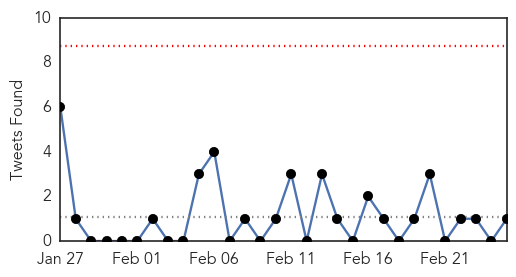
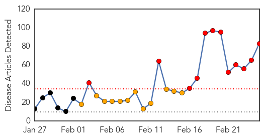

Unknown
30-Day Web Trend
1 alerts, 0 warnings

30-Day Twitter Trend
0 alerts, 0 warnings

Article Locations

Article Confidences

Top Articles:
- 0.996
- Human-to-human transmission of fatal tick virus confirmed
- 0.995
- Uganda intensifies efforts to contain typhoid outbreak
- 0.993
- MERS-CoV: UN warns of ‘critical knowledge gaps’
- 0.991
- Doctors infected with tick-borne virus
- 0.989
- Uganda battles typhoid outbreak
- 0.987
- More Typhoid cases reported, Ministry of Health intensifies efforts to contain the Outbreak - Uganda
- 0.982
- 90% of Gulf camels 'MERS-infected'Healthcare
- 0.980
- Alishan hotel reports ...｜Society｜WCT
- 0.976
- The deadly, new "Bourbon virus" was just discovered in the US
- 0.974
- Flu still around but on the decline in El Paso
- 0.973
- Two More Die From Alarming Flu Season In Delaware
- 0.972
- Two hotel workers infected with norovirus
- 0.969
- Hartland facility coping with norovirus outbreak
- 0.966
- Public warned on juice as typhoid spreads
- 0.965
- DOH allays bird flu fears after OFW from China dies
- 0.957
- BREAKING NEWS: Three wards closed at Boston’s Pilgrim Hospital due to norovirus
- 0.956
- Norovirus outbreak closes three wards at Boston Pilgrim Hospital
- 0.917
- Chicago Tribune
- 0.917
- Chicago Tribune
- 0.917
- Chicago Tribune
- 0.917
- Chicago Tribune
- 0.917
- Chicago Tribune
- 0.917
- Chicago Tribune
- 0.917
- Chicago Tribune
- 0.917
- Chicago Tribune
- 0.917
- Chicago Tribune
- 0.917
- Chicago Tribune
- 0.917
- Chicago Tribune
- 0.917
- Chicago Tribune
- 0.917
- Chicago Tribune
- 0.917
- Chicago Tribune
- 0.917
- Chicago Tribune
- 0.917
- Chicago Tribune
- 0.917
- Chicago Tribune
- 0.917
- Chicago Tribune
- 0.917
- Chicago Tribune
- 0.910
- The world windows to Thailand
- 0.908
- Dangerous C. Difficile Germ Infects 500,000 Americans a Year
- 0.894
- CDC: 29,000 die annually from super bug
- 0.893
- Pinamungajan residents told: Visit nearest health facility
- 0.891
- Health News
- 0.883
- KRNV, Reno, NV
- 0.862
- NewsDaily
- 0.861
- How doctors in India scam sick patients
- 0.854
- U.S. CDC warns overuse of antibiotics has fuelled more infections
- 0.847
- C. difficile infections sicken half million in 2011, kill 29,000, CDC says
- 0.843
- Rotavirus vaccination drive begins next Sunday
- 0.840
- Man dies of bird flu in Egypt's Fayoum
- 0.834
- Hand,foot and mouth disease cases increase
- 0.833
- Mass HIV Infection Kills Fifth Villager in Cambodia’s Roka Commune
Showing top 50 articles...
Top Tweets:
- 0.718
- Dormir menos de lo acostumbrado por varios días corridos es un espanto.
- 0.607
- .@TongXiaoDi we're unable to provide medical advice for individual patients. If you are high risk for flu complications, seek medical care
- 0.547
- Apartamento inundado. Y no es de placeres.
Swine Flu
30-Day Web Trend
12 alerts, 12 warnings

30-Day Twitter Trend
0 alerts, 0 warnings

Article Locations

Article Confidences

Top Articles:
- 1.000
- Panic spreads as swine flu deaths rise in India ucanews.com
- 1.000
- Read Health News & Articles at TheHealthSite.com
- 1.000
- Isolation debate on swine flu
- 1.000
- 10 die, 166 test ve in state in 24 hours
- 1.000
- Ahmedabad bans public gatherings as deadly swine flu sweeps across Gujarat
- 1.000
- India swine flu: Outbreak has already claimed nearly 850
- 0.999
- Swine flu Death toll Reaches 219 and 3,337 Cases
- 0.999
- Metropolis healthcare offers Swine Flu test at Rs. 4000
- 0.999
- Siliguri docs in flu isolation
- 0.999
- Running a fever
- 0.999
- Indian city bans gatherings over swine flu outbreak
- 0.999
- At high risk, CISF personnel wear anti-swine flu masks
- 0.999
- Swine flu claims 51 more lives, death toll 926; No panic: Govt
- 0.999
- High Court directs UP to purchase three lakh masks
- 0.999
- H1N1 2015 city’s worst outbreak
- 0.998
- Flu fight stuck in isolation debate
- 0.998
- Indian city imposes swine flu restrictions - Panorama
- 0.998
- High Court directs UP to purchase three lakh masks
- 0.998
- Swine flu claims 51 more lives, death toll at 926; govt says 'don't panic'
- 0.998
- St George’s isolation ward remains idle as patients wait at pvt hospitals
- 0.997
- Swine flu kills 51 more, toll reaches 926; No panic
- 0.997
- Dos and Donts to avoid swine flu
- 0.997
- Swine flu claims 51 more lives, over 16,000 affected
- 0.996
- Two swine flu patients found in North Bengal
- 0.995
- Indian city bans public gatherings over swine flu fears
- 0.995
- J P Nadda does not recommend vaccination for general public
- 0.995
- Delhi HC seeks response from Centre and state govt to tackle swine flu surge : India, News
- 0.994
- Six tested positive for swine flu in Bihar
- 0.993
- Health desks set up at border points
- 0.993
- Swine flu: India health minister urges calm
- 0.993
- Swine flu: India health minister urges calm
- 0.992
- Urgent need for India to find out if swine flu virus has mutated
- 0.992
- Three fresh swine flu deaths in Telangana
- 0.992
- Swine flu kills 51 more people, affects over 16,000 across country : India, News
- 0.991
- Section 144 imposed in Ahmedabad to prevent swine flu , AniNews.in
- 0.990
- Swine flu in Telangana: Are you being treated for the wrong virus?
- 0.989
- Open separate centre for A(H1N1) influenza in Davangere, State government urged
- 0.988
- Suspected Swine Flu patients, a harassed lot: alleges Aam Aadmi Party Ludhiana
- 0.986
- Costa Rican health officials confirm eight deaths from AH1N1 virus -The Tico Times
- 0.984
- Open separate centre for A(H1N1) influenza in Davangere, State government urged
- 0.983
- ‘Mandatory week off to children with flu’; 53 New Cases Take Total To 326
- 0.982
- Imposing law to tackle swine flu will only create panic: Tariq Anwar
- 0.982
- Court notice to government on swine flu; Nadda says don't panic
- 0.982
- Be alert to swine flu virus, but no need to panic, says Health Minister
- 0.981
- What steps taken to deal with swine flu, Delhi HC asks Centre
- 0.981
- Court notice to government on swine flu; Nadda says don't panic
- 0.981
- Man dies of H1N1, 2 days after being told he’s virus-free
- 0.980
- Swine Flu H1N1: Red alert in Arunachal Pradesh to tackle the outbreak of swine flu
- 0.977
- Swine flu: Expert urges Indian researchers to find out if virus has mutated
- 0.977
- 413 swine flu cases in UP, toll mounts to 11
Showing top 50 articles...
Top Tweets:
-
No tweets found for Feb 25, 2015